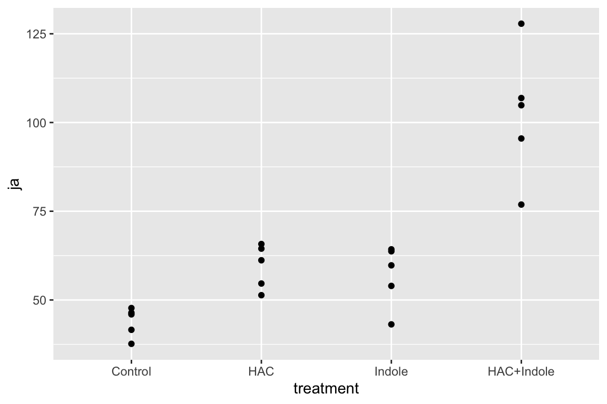

Chapter 15 Two (or more) Categorical \(X\) – Factorial designs
** “ASK1 inhibits browning of white adipose tissue in obesity” ** assess interaction by comparing simple effects and concluded incorrectly.
15.1 Factorial experiments
A factorial experiment is one in which there are two or more categorical \(X\) that are crossed, resulting in a group for all combinations of the levels of each factor. Factorial experiments are used to estimate the interaction between factors, which occurs when the effect of the level of one factor depends on the levels of the other factors. For example, a researcher wants to estimate the effect of an environmental toxin on basal metabolic rate (BMR) in a fish and designs an experiment with two factors: \(Treatment\) with levels “control” and “toxin” and \(Sex\), with levels “male” and “female”. If the magnitude (and possibly sign) of the effect of the toxin on BMR differs between males and females, there is an interaction between \(Treatment\) and \(Sex\). Interactions are usually denoted with a \(\times\) symbol: \(Treatment \times Sex\). Interactions are ubiquitous, although sometimes they are small enough to ignore with little to no loss of understading.
This chapter uses data from an experiment measuring the effect of \(Temp\) and \(CO2\) on larval sea urchin metabolic rate (\(Resp\)) (there are other outcome measures in the study too). The units of metabolic rate are pmol O2/hr/larva. There are two \(Temp\) levels (13C and 18C) and two \(CO2\) levels (400 µAtm and 1100 µAtm) and the factors are fully crossed, which makes this a \(2 \times 2\) (crossed or factorial) design. There are \(n=6\) replicates for each combination of the levels. A good way to visualize the treatment combinations in a crossed design is with a \(m \times p\) table showing all combinations of the \(m\) levels of factor 1 (\(Temp\)) against the \(p\) levels of factor 2 (\(CO2\))

The upper left cell represents the combination of 13 C and 400 µAtm level within the CO2 factor. The replicates in this cell were grown with no added treatments, so this cell is the “control” for Temp and the control for CO2, which we will use as the “reference” group for the linear model. The replicates in the lower left cell were grown with an added temperature treatment (in this case, a 5 C higher temperature). The replicates in the upper right cell were grown with an added CO2 treatment (700 µATM higher CO2). And finally, the replicates in the bottom right cell were grown with both the added temperature (+5 C) and added CO2 (+700 µATM). Here, I use a “+” or “-” to designate the addition (or not) of the treatment, so our \(2 \times 2\) treatment levels are Temp-/CO2-, Temp+/CO2-, Temp-/CO2+ and Temp+/CO2+.
15.1.1 Model coefficients: an interaction effect is what is leftover after adding the treatment effects to the control
A factorial design allows a researcher to estimate the interaction between two factors. To clarify this, let’s fit the factorial model and look at the coefficient table. The systematic component of the factorial model is
\[\begin{equation} Resp = \beta_0 + \beta_1 Temp^+ + \beta_2 CO2^+ + \beta_3 Temp^+ CO2^+ \tag{15.1} \end{equation}\]
Again, \(Temp^+\) and \(CO2^+\) are dummy variables. The model also includes \(Temp^+ CO2^+\), which is a dummy variable for the interaction between Temp and CO2. The value of this interaction dummy variable is literally the product of the two main factor dummy variables (\(Temp^+\) and \(CO2^+\)), which can be verified with the model matrix (which here, is computed from the subset of the data that includeds only the first two rows of each treatment combination)
| (Intercept) | Temp+ | CO2+ | Temp+:CO2+ |
|---|---|---|---|
| 1 | 0 | 0 | 0 |
| 1 | 0 | 0 | 0 |
| 1 | 1 | 0 | 0 |
| 1 | 1 | 0 | 0 |
| 1 | 0 | 1 | 0 |
| 1 | 0 | 1 | 0 |
| 1 | 1 | 1 | 1 |
| 1 | 1 | 1 | 1 |
The coefficient table is
| Estimate | Std. Error | t value | Pr(>|t|) | |
|---|---|---|---|---|
| (Intercept) | 8.23 | 0.73 | 11.3 | 0.000 |
| Temp+ | 4.51 | 1.03 | 4.4 | 0.000 |
| CO2+ | -0.32 | 1.03 | -0.3 | 0.761 |
| Temp+:CO2+ | -2.68 | 1.45 | -1.9 | 0.079 |
- The Intercept (\(b_0\)) is the mean (8.23) of the reference (Temp-/CO2-) group, and so the mean of the upper left cell in Table 1).
- The Temp+ coefficient (\(b_1\)) is the estimate of the added temperature effect relative to the reference, and so is the mean of the lower left cell minus the mean of the upper left cell (\(b_1=\bar{Y}_{Temp^+}-\bar{Y}_{Temp-/CO2-}\)). Another way of stating this is, it is the effect of Temp when CO2 is at its reference level.
- The CO2+ coefficient (\(b_2\)) is the estimate of the added CO2 effect relative to the reference, and so is the mean of the upper right cell minus the mean of the upper left cell (\(b_2=\bar{Y}_{CO2^+}-\bar{Y}_{Temp-/CO2-}\)). Another way of stating this is, it is the effect of CO2 when Temp is at its reference level.
- The Temp+:CO2+ coefficient (\(b_3\)) is the estimate of the interaction effect, which is the effect in addition to the Temp\(^+\) and CO2\(^+\) effects. If you added \(b_1\) and \(b_2\) to \(b_0\), you would get the mean of the Temp\(^+\)/CO2\(^+\) group if the effects were purely additive. So the interaction effect is the difference between the mean of the bottom right cell and the sum of the coefficients of the other three cells (\(b_3 = \bar{Y}_{Temp^+CO2^+} - (b0 + b1 + b2)\)). An interaction is a non-additive effect. Think about this. Adding 5 C increases respiration by 4.51 units. Adding 700 µATM CO2 decreases respiration by .32 units. If these effects were purely additive, then adding both 5 C and 700 µATM should result in a mean of 8.23 + 4.51 - .32 = 12.42 units for the Temp\(^+\)/CO2\(^+\) group. What is the mean of this group?
9.74! So the difference between the ``additive expectation’’ and the actual mean is \(9.74 - 12.42 = -2.68\), which is the interaction effect (coefficient). A graphical interpretation of these coefficients are in the figure of treatment means below (figure ??)
Figure 15.1: Meaning of coefficients in factorial model. b0 (dashed line) is the mean of the reference. b1 (length of vector b1) is the mean of the Temp treatment minus the mean of the reference. b2 (length of vector b2) is the mean of the CO2 treatment minus the mean of the reference. b3 (length of vector b3) is the mean of the Temp + CO2 treatment minus what this value would be if there were no interaction (indicated by the open gold circle)
15.1.2 What is the biological meaning of an interaction effect?
I can dead lift 150 pounds and my friend Jake can deadlift 175 pounds. Working together, we should be able to lift 325 pounds. What if together, we could actually lift 400 pounds? If this were the case, this would be an interaction with an effect equal to 75 pounds. Is this biologically plausible? If so, what is the mechanism? Here is a possible mechanism (although I am highly skeptical of it having a magnitude of 75 pounds): when lifting an object as part of a group, the central nervous system allows increased motor unit recruitment, and so each person can lift more weight than they could if lifting alone. A positive interaction like this is called synergistic. Always think about the biological meaning of an interaction effect.
15.1.3 The interpretation of the coefficients in a factorial model is entirely dependent on the reference…
at least using dummy coding of the factor variables, which is the default in R. To see this, here is the coefficient table of the model but assigning Temp+/CO2+ as the reference (by re-ordering levels in both factors)
| Estimate | Std. Error | t value | Pr(>|t|) | |
|---|---|---|---|---|
| (Intercept) | 9.74 | 0.73 | 13.4 | 0.000 |
| Temp- | -1.82 | 1.03 | -1.8 | 0.091 |
| CO2- | 3.00 | 1.03 | 2.9 | 0.008 |
| Temp-:CO2- | -2.68 | 1.45 | -1.9 | 0.079 |
This dependence of the coefficients on the reference is a feature not a bug. It is what we mean when we pose the questions “Compared to larvae raised at today’s temperature, what is the effect of adding 5° Temp on larval respiration?”, “Compared to larvae raised at today’s CO2, what is the effect of adding 700 ppm CO2 on larval respiration?”, and “Compared to larvae raised at today’s temperature and CO2, what is the effect of adding 5° Temp and 700 µAtm CO2 on larval respiration?” If we change the reference, we are asking different questions.
15.1.4 Estimated marginal means
The modeled means (or predicted values) of the factorial model (Model (15.1)) fit to the urchin data are shown in the table below. The values in the last column and row are the marginal means, which are the means of the associated row or column. More generally, marginal refers to a statistic averaged across multiple levels of another variable
| Temp | 400 µAtm | 1100 µAtm | mean |
|---|---|---|---|
| 13 C | 8.2333 | 7.9167 | 8.0750 |
| 18 C | 12.7433 | 9.7417 | 11.2425 |
| mean | 10.4883 | 8.8292 |
The marginal means with their CIs are
| Temp | emmean | SE | df | lower.CL | upper.CL |
|---|---|---|---|---|---|
| 13 | 8.0750 | 0.5130468 | 20 | 7.004803 | 9.145197 |
| 18 | 11.2425 | 0.5130468 | 20 | 10.172303 | 12.312697 |
| CO2 | emmean | SE | df | lower.CL | upper.CL |
|---|---|---|---|---|---|
| 400 | 10.488333 | 0.5130468 | 20 | 9.418136 | 11.558530 |
| 1100 | 8.829167 | 0.5130468 | 20 | 7.758970 | 9.899363 |
15.1.5 In a factorial model, there are multiple effects of each factor (simple effects)
With a single factor, there was a single effect for each non-reference level of the factor. For example, if the levels are “control”, “knockout”, and “rescue”, the knockout effect is the contrast between knockout and control and the rescue effect is the contrast between rescue and control. In a factorial experiment with crossed A and B factors, there are multiple effects of a non-reference level of factor A – one for each level of factor B. For the urchin experiment, there is an effect of the 18 C level of Temp when CO2 is 400 µAtm and an effect when CO2 is 1100 µAtm. Similarly, there is an effect of the 1100 level of CO2 when Temp is 13 C and when Temp is 18 C. These effects, or contrasts (differences in modeled means), are sometimes called the simple effects. Another name could be the “conditional” effects, since the value of the effect is conditional on the level factor B.
One way to visualize the simple effects is by using the \(2 \times 2\) table of treatment combinations. The contrasts in the right-side column are the simple effects of CO2 at each level of Temp. The contrasts in the bottom row are the simple effects of Temp at each level of CO2. Note that the first simple effect for each factor has a corresponding row in the table of coefficients of the fit model above.
| Temp | 400 µAtm | 1100 µAtm | simple |
|---|---|---|---|
| 13 C | 8.2333 | 7.9167 | -0.3167 |
| 18 C | 12.7433 | 9.7417 | -3.0017 |
| simple | 4.5100 | 1.8250 |
The 95% confidence intervals and p-values of the simple effects of the factorial model (Model (15.1)) are given in the table below.
| CO2 | Temp | Contrast | Estimate | Lower CI | Upper CI | t | p |
|---|---|---|---|---|---|---|---|
| 400 | . | 18 - 13 | 4.5100 | 2.3696 | 6.6504 | 4.3953 | 0.0003 |
| 1100 | . | 18 - 13 | 1.8250 | -0.3154 | 3.9654 | 1.7786 | 0.0905 |
| . | 13 | 1100 - 400 | -0.3167 | -2.4571 | 1.8237 | -0.3086 | 0.7608 |
| . | 18 | 1100 - 400 | -3.0017 | -5.1421 | -0.8613 | -2.9253 | 0.0084 |
The first line is the effect of the 18 C level of Temp when CO2 is 400 µAtm. The 3rd line is the effect of the 1100 µAtm level of CO2 when Temp is 13 C.
15.1.6 Marginal effects
The average of the simple effects for a factor are the marginal effects, or the main effects in ANOVA terminology.
| Temp | 400 µAtm | 1100 µAtm | simple | marginal |
|---|---|---|---|---|
| 13 C | 8.2333 | 7.9167 | -0.3167 | |
| 18 C | 12.7433 | 9.7417 | -3.0017 | |
| simple | 4.5100 | 1.8250 | 3.1675 | |
| marginal | -1.6592 |
| Contrast | Estimate | Lower CI | Upper CI | t | p |
|---|---|---|---|---|---|
| 18 - 13 | 3.1675 | 1.6540 | 4.6810 | 4.3656 | 0.0003 |
| 1100 - 400 | -1.6592 | -3.1727 | -0.1457 | -2.2867 | 0.0332 |
Marginal effects can be useful for summarizing a general trend, but, like any average, might not be especially meaningful if there is large heterogeneity of the simple effects, which occurs when the interaction effect is large. The urchin example is a good example of marginal effects that would be highly misleading to present without further comment.
15.1.7 The additive model
If an interaction effect is small, then it can be useful to estimate the effects of the two factors as if the interaction were equal to zero.
\[\begin{equation} Resp = \beta_0 + \beta_1Temp^+ + \beta_2CO2^+ \end{equation}\]
This is a reduced model because one of the terms has been removed from the model. This particular reduced model is often referred to as the additive model, since it excludes the interaction term, which is a product of other terms. The model coefficients of the additive model are given in the table below.
| Estimate | Std. Error | t value | Pr(>|t|) | |
|---|---|---|---|---|
| (Intercept) | 8.90 | 0.66 | 13.4 | 0.000 |
| Temp+ | 3.17 | 0.77 | 4.1 | 0.000 |
| CO2+ | -1.66 | 0.77 | -2.2 | 0.042 |
The conditional effects of the reduced model are
| CO2 | Temp | Contrast | Estimate | Lower CI | Upper CI | t | p |
|---|---|---|---|---|---|---|---|
| 400 | . | 18 - 13 | 3.1675 | 1.5739 | 4.7611 | 4.1336 | 0.0005 |
| 1100 | . | 18 - 13 | 3.1675 | 1.5739 | 4.7611 | 4.1336 | 0.0005 |
| . | 13 | 1100 - 400 | -1.6592 | -3.2527 | -0.0656 | -2.1652 | 0.0420 |
| . | 18 | 1100 - 400 | -1.6592 | -3.2527 | -0.0656 | -2.1652 | 0.0420 |
The table shows that all conditional effects within a factor are the same. This makes sense – if the model fit is additive, the interaction effect is set to zero and, consequently there cannot be differences in conditional effects. Probably a better way of thinking about this is, it doesn’t make sense to compute or discuss conditional effects in an additive model. Instead, an additive model automatically computes marginal effects.
| Contrast | Estimate | Lower CI | Upper CI | t | p |
|---|---|---|---|---|---|
| 18 - 13 | 3.1675 | 1.5739 | 4.7611 | 4.1336 | 0.0005 |
| 1100 - 400 | -1.6592 | -3.2527 | -0.0656 | -2.1652 | 0.0420 |
Compare the table of marginal effects of the additive model to the table of marginal effects of the full model. The estimates are the same but the t-values and p-values differ because of different degrees of freedom (the full model estimates one more parameter, the interaction effect). The estimate is the same only if the design is balanced, which means that each combination of treatment levels has the same sample size n.
15.1.8 Reduce models for the right reason
Unless one factor truly has no effect, there will always be an interaction. As stated above, interactions are ubiquitous. If an interaction is small, it can make sense to drop the interaction term and re-fit an additive model to estimate marginal effects in order to present a simplified picture of what is going on, with the recognition that these estimates are smoothing over the heterogenity in conditional (simple) effects that truly exist.
Aided and abetted by statistics textbooks for biologists, there is a long history of researchers dropping an interaction effect because the interaction \(p>0.05\). Don’t do this. It doesn’t make any sense.
- The \(p\)-value is an arbitrary dichotomization of a continuous variable. Would it make sense to behave differently if the interaction were \(p=0.051\) vs. \(p=0.049\), given that these two p-values are effectively identical?
- A \(p\)-value is not evidence that an effect is zero, or “doesn’t exist”, or even that an effect is “trivially small”. This is because \(p\)-values are a function of measurement error, sampling error, and sample size, in addition to effect size.
15.1.9 What about models with more than two factors?
A factorial model can have more than two factors, for example, a model with three factors (A, B, and C), each with two levels (which I’ll designate with a “+”), is
\[\begin{equation} Y = \beta_0 + \beta_1 A^+ + \beta_1 B^+ + \beta_3 C^+ + \beta_4 A^+ B^+ + \beta_5 A^+ C^+ + \beta_6 B^+ C^+ + \beta_7 A^+ B^+ C^+ + \varepsilon \end{equation}\]
It is easy enough to get an ANOVA table with \(p\)-values for this model but I don’t recommend it because
- If space and/or time and/or materials are limited then it typically makes more sense to prioritize the power to estimate standard errors by choosing one of the two-factor models and increasing sample size
- Interaction effects in 2-factor models are hard enough to interpret. A 3-way interaction is very, very tough to interpret. If all we did was table up \(F\)-ratios and \(p\)-values, this wouldn’t matter. But it does matter.
15.2 Reporting results
15.2.1 Text results
The effect of the increased temperature at the control CO2 level was 4.5 pmol O2/hr/larva (95% CI: 2.4, 6.7; \(p < 0.001\)). The effect of increased CO2 at the control temperature was -0.3 pmol O2/hr/larva (95% CI: -2.4, 1.8; \(p=.76\)). The interaction effect was -2.7 pmol O2/hr/larva (95% CI: -5.7, 0.3; \(p = 0.079\)). Because of the relatively large interaction, the effect of temperature at the high level of CO2 was less than half the effect at the low level of CO2 (estimate: 1.82; 95% CI: -0.3, 4.0; \(p = 0.091\)) and the effect of CO2 at the high level of Temp was 10 times greater than that at the low level of Temp (estimate: -3.0; 95% CI: -5.1, -.9; \(p = 0.0084\)).
The CI on the interaction includes both large negative values and trivially small values, including zero, and, consequently, our data is compatible with both scientific models (that is, we can neither support nor reject the predictions of the scientific model using these results).
15.3 Working in R
15.3.1 Model formula
A full-factorial model with two factors is specified in the model formula as y ~ A*B where A is the first factor, and B is the second factor. The * indicates to cross A and B. R expands this formula to y ~ 1 + A + B + A:B where the colon indicates an interaction (multiplicative) effect.
## Estimate Std. Error t value Pr(>|t|)
## (Intercept) 8.2333333 0.7255577 11.3475922 3.626935e-10
## Temp18 4.5100000 1.0260936 4.3953106 2.792573e-04
## CO21100 -0.3166667 1.0260936 -0.3086138 7.608069e-01
## Temp18:CO21100 -2.6850000 1.4511155 -1.8503007 7.910035e-02The additive model is specified by the formula y ~ A + B
## Estimate Std. Error t value Pr(>|t|)
## (Intercept) 8.904583 0.6636207 13.418183 9.038657e-12
## Temp18 3.167500 0.7662831 4.133590 4.721000e-04
## CO21100 -1.659167 0.7662831 -2.165214 4.203445e-0215.3.2 Modeled means
Modeled means are estimated using emmeans::emmeans. The means for all combinations of Temp and CO2 are obtained with the specs argument.
## Temp CO2 emmean SE df lower.CL upper.CL
## 13 400 8.23 0.726 20 6.72 9.75
## 18 400 12.74 0.726 20 11.23 14.26
## 13 1100 7.92 0.726 20 6.40 9.43
## 18 1100 9.74 0.726 20 8.23 11.26
##
## Confidence level used: 0.9515.3.3 Marginal means
The marginal means are
## Temp emmean SE df lower.CL upper.CL
## 13 8.07 0.513 20 7.0 9.15
## 18 11.24 0.513 20 10.2 12.31
##
## Results are averaged over the levels of: CO2
## Confidence level used: 0.95## CO2 emmean SE df lower.CL upper.CL
## 400 10.49 0.513 20 9.42 11.6
## 1100 8.83 0.513 20 7.76 9.9
##
## Results are averaged over the levels of: Temp
## Confidence level used: 0.9515.3.4 Contrasts
All six pairwise contrasts are computed using emmeans::contrast. The adjust argument specifies the adjustment for multiple testing. The method argument specifies the type of contrast (pairwise and revpairwise give all pairwise contrasts. revpairwise simply gives the reverse of pairwise)
m1.contrast <- contrast(m1.emm, adjust="none", method="revpairwise")
# add CIs
m1.contrast.ci <- summary(m1.contrast, infer=c(TRUE, TRUE))
m1.contrast.ci## contrast estimate SE df lower.CL upper.CL t.ratio p.value
## 18,400 - 13,400 4.510 1.03 20 2.370 6.650 4.395 0.0003
## 13,1100 - 13,400 -0.317 1.03 20 -2.457 1.824 -0.309 0.7608
## 13,1100 - 18,400 -4.827 1.03 20 -6.967 -2.686 -4.704 0.0001
## 18,1100 - 13,400 1.508 1.03 20 -0.632 3.649 1.470 0.1571
## 18,1100 - 18,400 -3.002 1.03 20 -5.142 -0.861 -2.925 0.0084
## 18,1100 - 13,1100 1.825 1.03 20 -0.315 3.965 1.779 0.0905
##
## Confidence level used: 0.9515.3.5 Simple effects
The four conditional (simple) effects are a subset of the contrasts above and are computed using the arguments simple="each" and combine=TRUE.
m1.effects <- summary(contrast(m1.emm,
method="revpairwise",
adjust="none",
simple = "each",
combine=TRUE),
infer=c(TRUE,TRUE))
m1.effects## CO2 Temp contrast estimate SE df lower.CL upper.CL t.ratio p.value
## 400 . 18 - 13 4.510 1.03 20 2.370 6.650 4.395 0.0003
## 1100 . 18 - 13 1.825 1.03 20 -0.315 3.965 1.779 0.0905
## . 13 1100 - 400 -0.317 1.03 20 -2.457 1.824 -0.309 0.7608
## . 18 1100 - 400 -3.002 1.03 20 -5.142 -0.861 -2.925 0.0084
##
## Confidence level used: 0.9515.3.6 Marginal effects
The marginal effects of the factorial model are
m1.emm.1 <- emmeans(m1, specs=c("Temp"))
m1.effects.1 <- summary(contrast(m1.emm.1,
method="revpairwise",
adjust="none"),
infer=c(TRUE,TRUE))
m1.effects.1## contrast estimate SE df lower.CL upper.CL t.ratio p.value
## 18 - 13 3.17 0.726 20 1.65 4.68 4.366 0.0003
##
## Results are averaged over the levels of: CO2
## Confidence level used: 0.95m1.emm.2 <- emmeans(m1, specs=c("CO2"))
m1.effects.2 <- summary(contrast(m1.emm.2,
method="revpairwise",
adjust="none"),
infer=c(TRUE,TRUE))
m1.effects.2## contrast estimate SE df lower.CL upper.CL t.ratio p.value
## 1100 - 400 -1.66 0.726 20 -3.17 -0.146 -2.287 0.0332
##
## Results are averaged over the levels of: Temp
## Confidence level used: 0.95These can be combined into a single table using rbind
m1.effects.marginal <- rbind(data.table(m1.effects.1), data.table(m1.effects.2))
m1.effects.marginal## contrast estimate SE df lower.CL upper.CL t.ratio
## 1: 18 - 13 3.167500 0.7255577 20 1.654013 4.6809869 4.365607
## 2: 1100 - 400 -1.659167 0.7255577 20 -3.172654 -0.1456798 -2.286747
## p.value
## 1: 0.0002993051
## 2: 0.033247327215.3.7 Plotting results
15.3.7.1 Bar plot with uniform coloring poorly communicate the factorial design
# bar plot with uniform color
urchin[, xlabel := paste0("Temp:",Temp,"/","CO2:",CO2)]
ggbarplot(x="xlabel",
y="Resp",
data=urchin[!is.na(Resp),],
add=c("mean_ci", "jitter"),
fill=(pal_jco("default")(4))[1]) +
xlab("Treatment") +
NULL
15.3.7.2 Plots that communicate the factorial design
# bar-plot with 2nd factor different color
pd <- position_dodge(0.7)
gg1 <- ggbarplot(x="Temp",
y="Resp",
fill="CO2",
data=urchin[!is.na(Resp),],
add=c("mean_ci"),
position=pd) +
geom_point(aes(fill=CO2),
color="black",
position=position_jitterdodge(jitter.width=0.2),
show.legend=FALSE,
alpha=0.5) +
scale_fill_jco() +
NULL
# "interaction" plot
m1.emm.dt <- data.table(summary(m1.emm))
pd = position_dodge(0.7)
gg2 <- ggplot(data=m1.emm.dt,
aes(x=Temp,
y=emmean,
shape=CO2,
color=CO2,
group=CO2)) +
geom_point(position=pd, size=3) +
geom_errorbar(aes(x=Temp,
ymin=lower.CL,
ymax=upper.CL,
group=CO2)
, position=pd, width=0.1) +
geom_line(position=pd) +
ylab("Resp") +
scale_color_jco() +
theme_pubr() +
#theme(legend.position="bottom") +
NULL
# interaction "jitter" plot
gg3 <- gg2 +
geom_point(data=urchin[!is.na(Resp),], aes(x=Temp, y=Resp, fill=CO2),
position=position_jitterdodge(jitter.width=0.2)) +
# position=position_jitter(width=0.2)) +
theme(legend.position="bottom") +
NULL
gg_response <- gg3 # used below
# box "interaction" plot
m1.emm.dt <- data.table(summary(m1.emm))
pd <- position_dodge(0.8)
gg4 <- ggboxplot(x="Temp",
y="Resp",
data=urchin[!is.na(Resp),],
fill="CO2") +
scale_fill_jco() +
geom_point(data=m1.emm.dt,
aes(x=Temp, y=emmean, group=CO2),
color="red",
position=pd) +
geom_line(data=m1.emm.dt,
aes(x=Temp, y=emmean, group=CO2),
position=pd) +
theme(legend.position="bottom") +
NULL
plot_grid(gg1, gg2, gg3, gg4, nrow=2, labels="AUTO")
Figure 15.2: Interaction plots. (B) is the classic interaction plot, which is characterized by lines connecting the groups that share the same Factor B level. This line allows one to visual the effect of Factor A (the slope) at each level of Factor B.
A common way to plot the results of factorial models is with an interaction plot (Figure 15.2). In the interaction plot of the urchin data, the \(X\)-axis contains the two \(Temp\) treatment levels and the \(Y\)-axis is the outcome (\(Resp\)). The plot shows the four cell means indicated by the circles (low CO2 levels) or triangles (high CO2 levels). The solid lines connect the cell means across Temp levels within CO2 levels.
- The slope of a line is the effect of \(Temp\) on \(Resp\)
- The relative elevation of the two lines is the effect of \(CO2\) on \(Resp\)
- The difference in slope or the relative elevation at each level of \(Temp\) is the interaction effect
Let’s deconstruct this. The top (CO2-) line is the effect of \(Temp\) at the control (400 µATM) value of \(CO2\). The slope of the bottom (CO2+) line is the effect of \(Temp\) at the high (1100 µATM) value of \(CO2\). These lines have different slopes, or the slope is conditional on the level of CO2. This means that the effect of \(Temp\) on respiration is conditional on the value of \(CO2\). Think about this. This is what an interaction implies–conditional effects.
At the reference temperature (13 C), the CO2+ line is barely below the CO2- line. But at the high temperature (18 C), the CO2+ line is far below the CO2- line. That is, the relative elevation (the \(CO2\) effect) is conditional on the level of \(Temp\). It will always be the case that if the effect of Factor A is conditional on the levels of Factor B, then the effect of Factor B will be conditional on the levels of Factor A.
An interaction plot is an okay plot. It doesn’t show the data, only a minimal, descriptive summary (means and standard errors). If we are interested in the interaction effect, it doesn’t give us a very good sense of the error in this effect. And that is a problem because with real data, two lines are never precisely parallel. Our interpretation of the similarity of the slopes would probably mostly reflect our pre-conceived scientific model.
15.3.7.3 Effects plots
# need m1.emm and m1.effects from above
# convert to data.table
m1.coefs <- coef(summary(m1))
m1.ci <- confint(m1)
m1.coefs.dt <- data.table(Term=row.names(m1.coefs), m1.coefs, m1.ci)
# convert labels to match those of m1.effects
setnames(m1.coefs.dt,
old=c("Estimate", "Std. Error", "Pr(>|t|)", "2.5 %", "97.5 %"),
new=c("estimate", "SE", "p.value", "lower.CL", "upper.CL"))
m1.contrasts.dt <- data.table(m1.effects)
# create a label for each contrast
m1.contrasts.dt[, Term:=ifelse(CO2!=".",
paste0(CO2, ":", contrast),
paste0(Temp, ":", contrast))]
m1.effects.dt <- rbind(m1.coefs.dt[4,], m1.contrasts.dt, fill=TRUE)
# effects plot
# get p-values
pval <- as.character(round(m1.effects.dt$p.value, 3))
pval[2] <- "0.0003"
gg_effects <- ggdotplot(x="Term",
y="estimate",
data=m1.effects.dt,
color = (pal_jco("default")(4))[1],
fill = (pal_jco("default")(4))[1],
size=0.5) +
geom_errorbar(aes(x=Term, ymin=lower.CL, ymax=upper.CL),
width=0.15, color=(pal_jco("default")(4))[1]) +
ylab("Contrast") +
geom_hline(yintercept=0, linetype = 2) +
annotate("text", x = 1:5, y = rep(7.75, 5), label = pval) +
annotate("text", x=5.4, y=7.75, label="p-value") +
expand_limits(y = 8.3) +
xlab("Contrast") +
coord_flip() +
NULL
gg_effects
This effects plot shows the four simple effects, the single interaction (Temp18:CO21100), and their 95% confidence intervals. In the original paper, the researchers were testing a scientific (not statistical!) model that predicted no interaction between CO2 and Temp, and the researchers argued that these data supported this model because of the “not statistically significant” p-value for the interaction effect. The data are consistent with this model (one end of the 95% CI for the interaction includes zero) but also support a model of a large, negative interaction (the other end of the 95% CI includes large negative values). The data are too course (or the signal:noise ratio is to small) to have much confidence in the size of the interaction effect.
15.4 Problems
Draw four \(2 \times 2\) tables and label the row and column headers using the levels of the urchin treatment. In the first table, insert the cell means. In the 2nd table, insert the equation for the coefficient. In the third table, solve the equations. And in the fourth column, insert the estimates from the table above. Are tables 3 and 4 the same? If not, you’ve goofed somewhere.
Frew et al. (2017) showed that increasing atomospheric CO2 increases grub activity in the soil which in turn increases root damage to sugarcane. They used a 2 x 2 experiment to then show that silicon added to the soild decreased the damage to the roots by the grubs (silicon minerals are very hard and plants uptake silicon from the soil to mineralize tissues to protect against insect damage). There are lots of analyses in the paper – try to reproduce Fig. 4b, but using an interaction plot.
(The treatment assignments are in a different file than the experimental results. Use the merge function to glue the two tables together, keying on the common column “plant”)
- file name: “canegrub_feedingtrial.csv”
- file name: “treatments.csv”
- source: https://datadryad.org/resource/doi:10.5061/dryad.r3s16
- Kardol et al investigated the effect of moss growth in response to rainfall and community structure. Analyze the effect of these two factors on biomass gain and generate a Harrell plot alternative to their bar plot in Fig. 3 (see below). What is striking about your plot compared to theirs?
Filename “Data file for Dryad.xlsx” sheet “Data” **Source*:** https://datadryad.org/resource/doi:10.5061/dryad.66d5f

- (Grad students only) Generate a fake experiment! The experiment should have two factors each with two levels. Experiment with power by varying sample size and effect size.